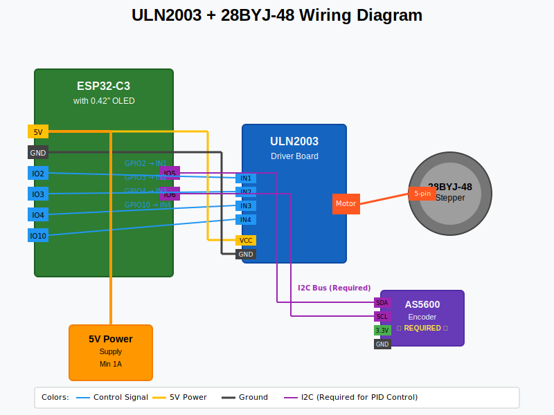

ULN2003 + 28BYJ-48 Assembly Guide¶
This guide covers assembling the budget-friendly configuration using the ULN2003 driver with 28BYJ-48 stepper motor.
Prerequisites¶
Before starting, ensure you have: - ✅ Gathered all required components - ✅ Basic soldering skills - ✅ Multimeter for testing - ✅ PlatformIO installed for firmware upload
Wiring Diagram Reference¶

Step-by-Step Assembly¶
Step 1: Prepare the ESP32-C3 Board¶
- Inspect the board for any obvious damage
- Test basic functionality:
- Note pin locations - Compare with your specific board layout
Pin Compatibility
Different ESP32-C3 boards may have different pin layouts. Verify your board matches the expected GPIO assignments.
Step 2: Prepare the ULN2003 Driver¶
- Inspect the ULN2003 board:
- Check for cold solder joints
- Verify all components are properly seated
-
Look for the LED indicators (A, B, C, D)
-
Test the driver (optional but recommended):
- Connect 5V and GND
- Briefly touch IN1-IN4 to 5V - corresponding LEDs should light
Step 3: Motor Driver Connections¶
Connect the ESP32-C3 to ULN2003 following this pinout:
| ESP32-C3 Pin | ULN2003 Pin | Wire Color | Function |
|---|---|---|---|
| GPIO2 | IN1 | Blue | Motor phase A |
| GPIO3 | IN2 | Green | Motor phase B |
| GPIO4 | IN3 | Yellow | Motor phase C |
| GPIO10 | IN4 | Orange | Motor phase D |
| 5V | VCC | Red | Power supply |
| GND | GND | Black | Ground |
Wiring Tips
- Use different colored wires for easy identification
- Keep control wires away from power wires
- Use solid core wire for breadboard connections
- Use stranded wire for final assembly
Step 4: Motor Connection¶
- Connect the 28BYJ-48 motor:
- The motor comes with a 5-pin JST connector
- Connect directly to the ULN2003 motor output
-
Ensure connector is fully seated
-
Verify motor wiring:
- The wire colors should match (usually Red center, then Blue, Pink, Yellow, Orange)
- If colors don't match, refer to your motor's datasheet
Step 5: Display Connection (I2C)¶
Connect the 0.42" OLED display:
| ESP32-C3 Pin | OLED Pin | Function |
|---|---|---|
| GPIO5 | SDA | I2C Data |
| GPIO6 | SCL | I2C Clock |
| 3.3V | VCC | Power (3.3V only!) |
| GND | GND | Ground |
Voltage Warning
The OLED display requires 3.3V, not 5V. Connecting 5V will damage the display permanently.
Step 6: Encoder Connection (Optional)¶
If using the AS5600 magnetic encoder:
| ESP32-C3 Pin | AS5600 Pin | Function |
|---|---|---|
| GPIO5 | SDA | I2C Data (shared with OLED) |
| GPIO6 | SCL | I2C Clock (shared with OLED) |
| 3.3V | VCC | Power (3.3V only!) |
| GND | GND | Ground |
Magnet placement: - Position the diametric magnet 0.5-3mm above the AS5600 chip - Ensure the magnet rotates with the filter wheel - Center the magnet over the chip for best accuracy
Step 7: Power Supply Options¶
Option A: USB Power (Simple)¶
- Power everything through the ESP32-C3's USB connection
- Limitation: May not provide enough current for continuous operation
- Best for: Testing and light-duty use
Option B: External 5V Supply (Recommended)¶
- Use a 5V/2A wall adapter or bench supply
- Connect to ESP32-C3's VIN pin and ULN2003's VCC
- Best for: Reliable operation and continuous use
Step 8: Initial Testing¶
- Visual inspection:
- Check all connections against the diagram
- Ensure no short circuits
-
Verify proper wire routing
-
Power-on test:
-
Basic functionality test:
Step 9: Mechanical Assembly¶
- Mount the motor:
- Secure the 28BYJ-48 to your filter wheel assembly
- Ensure proper alignment with the filter wheel axis
-
Use flexible coupling if needed to prevent binding
-
Mount the electronics:
- Install ESP32-C3 and ULN2003 in enclosure
- Route wires cleanly to avoid interference
-
Ensure adequate ventilation
-
Install the encoder (if used):
- Mount AS5600 board so the magnet passes over the sensor
- Verify 0.5-3mm air gap
- Test rotation through full range
Step 10: Software Configuration¶
-
Configure the firmware:
// In src/config.h, ensure this line is uncommented: #define MOTOR_DRIVER_ULN2003 // Verify pin assignments match your wiring: #define MOTOR_PIN1 2 // Connected to ULN2003 IN1 #define MOTOR_PIN2 3 // Connected to ULN2003 IN2 #define MOTOR_PIN3 4 // Connected to ULN2003 IN3 #define MOTOR_PIN4 10 // Connected to ULN2003 IN4 -
Build and upload:
-
Initial calibration:
Troubleshooting¶
Motor doesn't move¶
- Check power supply - ULN2003 needs adequate 5V current
- Verify wiring - Ensure all IN1-IN4 connections are correct
- Test driver - LEDs on ULN2003 should light during movement
- Check motor - Verify motor connector is fully seated
Erratic movement¶
- Loose connections - Check all wire connections
- Power supply noise - Use decoupling capacitors
- Interference - Route control wires away from power wires
Display issues¶
- Blank display - Check 3.3V power and I2C connections
- Partial display - Verify I2C address (usually 0x3C)
- No response - Ensure SDA/SCL aren't swapped
Encoder problems¶
- No angle reading - Check magnet position and 3.3V power
- Erratic readings - Verify magnet distance (0.5-3mm)
- I2C conflicts - Ensure AS5600 and OLED have different addresses
Performance Optimization¶
Motor Tuning¶
// In src/config.h, adjust these values:
#define MOTOR_SPEED 300.0 // Steps per second
#define MAX_MOTOR_SPEED 500.0 // Maximum speed
#define MOTOR_ACCELERATION 200.0 // Acceleration
Movement Optimization¶
- Lower speeds reduce noise and improve reliability
- Higher acceleration provides faster movements
- Unidirectional mode prevents backlash issues
Next Steps¶
Once assembly is complete:
- Initial Setup - Configure filter names and positions using serial commands
- Calibration - Perform precision calibration with
#CALand#REVCALcommands - ASCOM Integration - Connect to astronomy software using the serial protocol
Additional Resources¶
- Command Reference - Complete serial command documentation
- ASCOM Commands - Full ASCOM integration guide
- GitHub Repository - Source code and latest updates